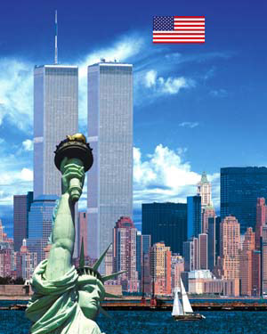

奥斯卡，资本全球化帝国的神圣祭坛！
2006/3/6 23:44:22

今天，又奥斯卡了；今天，又被奥斯卡了。被奥斯卡了的世界，在今天，奥斯卡地，在资本全球化帝国的神圣祭坛上，奥斯卡着资本血腥而温柔的祭祀。资本全球化，世界唯一的宗教，一切都在资本的一神论中灵肉合一。神圣的帝国，资本的牺牲，萃取了十二次月经的鲜红，向世界喧嚣着唯一的喧嚣。
资本同一化，在同一化的感官中感官着。资本全球化运动，全球化着资本同一化现实虚拟的虚拟现实。资本同一化，世界单极化，资本，世界有且只有的唯一G点，一元的多元。在这多元的一元背景下，奥斯卡，奥斯卡着最奥斯卡化的奥斯卡。多元的口活，资本全球化玩意，不变的多彩，永远的一元，资本创世神话的奥斯卡颂赞，自渎游戏的最后高潮。
文字，白花花的，沿着世界所有的管状物，资本同一性地喷发着。所有喷发的管状物，资本同一性地喧嚣着资本全球化帝国神圣祭坛的咏赞。如同奥斯维辛的哀号，管状世界所有管状的喷发，汇成人类有史以来最温柔血腥的颂歌：奥斯卡，哈利路亚！资本，哈利路亚！全球化，哈利路亚！资本全球化帝国，哈利路亚！
白花花的高潮，高潮着同一化的感官。在资本同一化同一化了的感官感官下，资本同一化的美好新世界，全球化地世界大同了；不被人的人，组合着全球化帝国资本模子化的感官，离散地感官了离散的世界，世界在离散的感官下人模人样地世界大同了；娱乐大众化的娱乐，大众娱乐化地鲜活了多元喧哗的世界，歇斯底里着一元资本化的世界世界大同了。
奥斯卡奥斯卡了的资本全球化大同世界万岁！奥斯卡奥斯卡了的资本全球化神圣帝国万万岁！奥斯卡奥斯卡了的全球化群交性感官娱乐万万万岁！奥斯卡奥斯卡了的世界性管状喷发万万万万岁！
回复